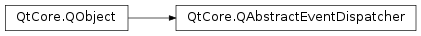

QAbstractEventDispatcher¶
Synopsis¶
Functions¶
- def
registerTimer(interval, timerType, object)
Virtual functions¶
- def
closingDown() - def
flush() - def
hasPendingEvents() - def
interrupt() - def
processEvents(flags) - def
registerSocketNotifier(notifier) - def
registerTimer(timerId, interval, timerType, object) - def
registeredTimers(object) - def
remainingTime(timerId) - def
startingUp() - def
unregisterSocketNotifier(notifier) - def
unregisterTimer(timerId) - def
unregisterTimers(object) - def
wakeUp()
Signals¶
- def
aboutToBlock() - def
awake()
Detailed Description¶
The
PySide2.QtCore.QAbstractEventDispatcherclass provides an interface to manage Qt’s event queue.An event dispatcher receives events from the window system and other sources. It then sends them to the
PySide2.QtCore.QCoreApplicationorPySide2.QtWidgets.QApplicationinstance for processing and delivery.PySide2.QtCore.QAbstractEventDispatcherprovides fine-grained control over event delivery.For simple control of event processing use
QCoreApplication.processEvents().For finer control of the application’s event loop, call
PySide2.QtCore.QAbstractEventDispatcher.instance()and call functions on thePySide2.QtCore.QAbstractEventDispatcherobject that is returned. If you want to use your own instance ofPySide2.QtCore.QAbstractEventDispatcheror of aPySide2.QtCore.QAbstractEventDispatchersubclass, you must install it withQCoreApplication.setEventDispatcher()orQThread.setEventDispatcher()before a default event dispatcher has been installed.The main event loop is started by calling
QCoreApplication.exec(), and stopped by callingQCoreApplication.exit(). Local event loops can be created usingPySide2.QtCore.QEventLoop.Programs that perform long operations can call
PySide2.QtCore.QAbstractEventDispatcher.processEvents()with a bitwise OR combination of variousQEventLoop.ProcessEventsFlagvalues to control which events should be delivered.
PySide2.QtCore.QAbstractEventDispatcheralso allows the integration of an external event loop with the Qt event loop.
-
class
PySide2.QtCore.QAbstractEventDispatcher([parent=nullptr])¶ Parameters: parent – PySide2.QtCore.QObjectConstructs a new event dispatcher with the given
parent.
-
PySide2.QtCore.QAbstractEventDispatcher.aboutToBlock()¶
-
PySide2.QtCore.QAbstractEventDispatcher.awake()¶
-
PySide2.QtCore.QAbstractEventDispatcher.closingDown()¶
-
PySide2.QtCore.QAbstractEventDispatcher.flush()¶ Depending from the event dispatcher implementation does nothing or calls
QApplication.sendPostedEvents().
-
PySide2.QtCore.QAbstractEventDispatcher.hasPendingEvents()¶ Return type: PySide2.QtCore.boolReturns
trueif there is an event waiting; otherwise returns false. This function is an implementation detail forQCoreApplication.hasPendingEvents()and must not be called directly.
-
static
PySide2.QtCore.QAbstractEventDispatcher.instance([thread=nullptr])¶ Parameters: thread – PySide2.QtCore.QThreadReturn type: PySide2.QtCore.QAbstractEventDispatcherReturns a pointer to the event dispatcher object for the specified
thread. Ifthreadis zero, the current thread is used. If no event dispatcher exists for the specified thread, this function returns 0.Note
If Qt is built without thread support, the
threadargument is ignored.
-
PySide2.QtCore.QAbstractEventDispatcher.interrupt()¶ Interrupts event dispatching. The event dispatcher will return from
PySide2.QtCore.QAbstractEventDispatcher.processEvents()as soon as possible.
-
PySide2.QtCore.QAbstractEventDispatcher.processEvents(flags)¶ Parameters: flags – PySide2.QtCore.QEventLoop.ProcessEventsFlagsReturn type: PySide2.QtCore.boolProcesses pending events that match
flagsuntil there are no more events to process. Returnstrueif an event was processed; otherwise returnsfalse.This function is especially useful if you have a long running operation, and want to show its progress without allowing user input by using the
QEventLoop.ExcludeUserInputEventsflag.If the
QEventLoop.WaitForMoreEventsflag is set inflags, the behavior of this function is as follows:- If events are available, this function returns after processing them.
- If no events are available, this function will wait until more are available and return after processing newly available events.
If the
QEventLoop.WaitForMoreEventsflag is not set inflags, and no events are available, this function will return immediately.Note
This function does not process events continuously; it returns after all available events are processed.
-
PySide2.QtCore.QAbstractEventDispatcher.registerSocketNotifier(notifier)¶ Parameters: notifier – PySide2.QtCore.QSocketNotifierRegisters
notifierwith the event loop. Subclasses must implement this method to tie a socket notifier into another event loop.
-
PySide2.QtCore.QAbstractEventDispatcher.registerTimer(interval, timerType, object)¶ Parameters: - interval –
PySide2.QtCore.int - timerType –
PySide2.QtCore.Qt.TimerType - object –
PySide2.QtCore.QObject
Return type: PySide2.QtCore.intRegisters a timer with the specified
intervalandtimerTypefor the givenobjectand returns the timer id.- interval –
-
PySide2.QtCore.QAbstractEventDispatcher.registerTimer(timerId, interval, timerType, object) Parameters: - timerId –
PySide2.QtCore.int - interval –
PySide2.QtCore.int - timerType –
PySide2.QtCore.Qt.TimerType - object –
PySide2.QtCore.QObject
Register a timer with the specified
timerId,interval, andtimerTypefor the givenobject.- timerId –
-
PySide2.QtCore.QAbstractEventDispatcher.registeredTimers(object)¶ Parameters: object – PySide2.QtCore.QObjectReturn type: Returns a list of registered timers for
object. TheTimerInfostruct hastimerId,interval, andtimerTypemembers.See also
Qt.TimerType
-
PySide2.QtCore.QAbstractEventDispatcher.remainingTime(timerId)¶ Parameters: timerId – PySide2.QtCore.intReturn type: PySide2.QtCore.intReturns the remaining time in milliseconds with the given
timerId. If the timer is inactive, the returned value will be -1. If the timer is overdue, the returned value will be 0.See also
Qt.TimerType
-
PySide2.QtCore.QAbstractEventDispatcher.startingUp()¶
-
PySide2.QtCore.QAbstractEventDispatcher.unregisterSocketNotifier(notifier)¶ Parameters: notifier – PySide2.QtCore.QSocketNotifierUnregisters
notifierfrom the event dispatcher. Subclasses must reimplement this method to tie a socket notifier into another event loop. Reimplementations must call the base implementation.
-
PySide2.QtCore.QAbstractEventDispatcher.unregisterTimer(timerId)¶ Parameters: timerId – PySide2.QtCore.intReturn type: PySide2.QtCore.boolUnregisters the timer with the given
timerId. Returnstrueif successful; otherwise returnsfalse.
-
PySide2.QtCore.QAbstractEventDispatcher.unregisterTimers(object)¶ Parameters: object – PySide2.QtCore.QObjectReturn type: PySide2.QtCore.boolUnregisters all the timers associated with the given
object. Returnstrueif all timers were successful removed; otherwise returnsfalse.
-
PySide2.QtCore.QAbstractEventDispatcher.wakeUp()¶ Wakes up the event loop.
© 2018 The Qt Company Ltd. Documentation contributions included herein are the copyrights of their respective owners. The documentation provided herein is licensed under the terms of the GNU Free Documentation License version 1.3 as published by the Free Software Foundation. Qt and respective logos are trademarks of The Qt Company Ltd. in Finland and/or other countries worldwide. All other trademarks are property of their respective owners.